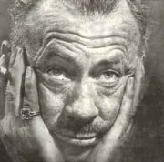

William van Alen: Chrysler, New York
Grant Wood: Americká gotika
|
SPOJENÉ STÁTY AMERICKÉ
Bìhem první poloviny 20. století se staly Spojené státy americké nejvìtší svìtovou velmocí. Americká demokracie dala rozkvést hospodáøství i kultuøe. Spojené státy americké pøestaly být závislé na impulzech z Evropy a naopak zaèaly vývoj urèovat. Po zapojení USA do 1. svìtové války (1917) nastoupila øada Amerièanù dobrovolnì na frontu. Váleèné zážitky otøásly jejich základními hodnotami. Domù se vraceli zcela jiní lidé, kteøí se nedokázali zaøadit do bìžné spoleènosti. Byli mezi nimi i spisovatelé, které Gertruda Steinová nazvala ztracenou generací.
Meziváleèný vývoj byl ve znamení nástupu konzumní civilizace a postupném uvolòování puritánské morálky. Hlavní metou se stal úspìch a honba za penìzi. Tzv. americký sen dával nadìji, že štìstí mùže dosáhnout každý, záleží jen na jeho schopnostech a pracovitosti. Pøíkladem byla øada pøistìhovalcù nebo chudákù, kteøí se v Americe prosadili a získali peníze i moc. Symbolem americké velikosti byly mrakodrapy, zábavy filmová studia v Hollywoodu a puritánství prohibice, která vytvoøila zdroj penìz pro zloèinecké organizace. Nezamìstnanost, špatné sociální podmínky nebo nerovnoprávné postavení èernošského obyvatelstva a indiánù zùstaly stinnými stránkami americké demokracie.
Hopper: Noèní bar
|
Historie
Spojené státy americké se do obou svìtových válek zapojily až dodateènì. Vždy stály na stranì vítìzù a získaly si tak velký politický vliv. Na jejich území se navíc nebojovalo, takže oproti znièené Evropì se zdejší hospodáøství rozvíjelo daleko intenzivnìji. V americké zahranièní politice se støídala období izolacionismu a ovlivòování dìní v Evropì i dalších oblastech svìta. Celkovou politiku urèovalo støídání demokratù a republikánù u moci. Roku 1920 získaly volební právo ženy a roku 1924 byla uznána obèanská práva indiánù. Prezident Wilson (1913-1921) mìl velký vliv na vznik Èeskoslovenska. Roku 1929 zasáhla Ameriku velká hospodáøská krize, které èelil prezident F. D. Roosevelt (1932-1945) politikou tzv. nového údìlu.
Lyonel Feininger: Plachetnice
|
Ernest Hemingway (1899-1961)
Ernest Hemingway [érnist hemingvej] odjel jako dobrovolník Èerveného køíže na italskou frontu, kde byl tìžce ranìn. Jako novináø èasto putoval po Evropì. Miloval španìlskou koridu, lovil zvíøata v Africe a pobýval na Kubì. Je autorem knih Fiesta, Sbohem, armádo, Zelené pahorky africké, Komu zvoní hrana, Staøec a moøe nebo Pohyblivý svátek. Roku 1954 obdržel Nobelovu cenu za literaturu. Hemingway spáchal sebevraždu. Patøí k pøedním pøedstavitelùm ztracené generace.

Henry Moore: Král a královna
|
Ernest Hemingway: Sbohem, armádo
Protiváleèný román Sbohem, armádo vychází z vlastních zážitkù autora. Mladý Amerièan Frederic Henry velí sanitním vozùm na italské frontì, kam se pøihlásil jako dobrovolník. Zamiluje se do anglické ošetøovatelky Kateøiny. Frederic je tìžce ranìn a zotavuje se v milánské nemocnici, kam za ním pøijede i Kateøina. Po pùl roce je Henry znovu povolán na frontu. Pøi ústupu opustí sanitku a je považován za dezertéra. Je zatèen, ale podaøí se mu uniknout. S tìhotnou Kateøinou potom prchá z Itálie do Švýcarska. Kateøinì se ale narodí mrtvé dítì a sama pøi porodu umírá.
Ernest Hemingway: Staøec a moøe
Novela Staøec a moøe je alegorickým pøíbìhem o souboji èlovìka s pøírodou. Starý kubánský rybáø Santiago a jeho mladý pomocník vyjíždìjí na moøe, ale již dlouho se jim nepodaøilo ulovit žádnou rybu. Rodièe zakážou chlapci rybaøit se Santiagem. Po tøech mìsících bez úlovku tedy vyjíždí na moøe sám. Po dlouhém a vysilujícím souboji se mu podaøí ulovit rybu svých snù – obrovského meèounovitého marlina. Bìhem zpáteèní cesty ale jeho úlovek sežerou žraloci. Chlapec se vrátí k Santiagovi, peèuje o nemocného starce a oba plánují spoleènou výpravu na moøe.
|

Yousuf Karsh: Hemingway
Jaký problém líèí ukázka?
Jak skonèili dobrovolníci, kteøí pomáhali italským vojskùm?
Jak mohla podobná zkušenost pøispìt k relativizaci hodnot ztracené generace?

Pøevyprávìj struènì dìj ukázky.
Charakterizuj hlavní postavu.
Co si myslíš o Hemingwayovì výroku „Èlovìka je možno znièit, ale ne porazit.“?
|
Theodore Dreiser (1871-1945)
Theodore Dreiser [sijedór drajzr] se živil jako žurnalista. Byl nesmlouvavým kritikem americké spoleènosti. Napsal romány Sestøièka Carrie, Jennie Gerhardtová, Trilogie touhy nebo Americká tragédie. Jeho naturalistické knihy byly zprvu naprosto odmítnuty kritikou.
Edward Hopper: Obchod
|
Theodore Dreiser: Americká tragédie
Hlavní postavou románu Americká tragédie je Clyde Griffith, jehož snem je získat bohatství, vysoké spoleèenské postavení a lásku krásných žen. Vystøídá nìkolik podøadných zamìstnání v rùzných mìstech. Nakonec ho zamìstná strýc ve své továrnì na prádlo, kde Clyde naváže milostný pomìr s dìlnicí Robertou Aldenovou. Clyde postupnì proniká mezi spoleèenskou smetánku a myslí si na dceru milionáøe Sondru Finchleyovou. Ve spoleèenském vzestupu mu ale brání tìhotná Roberta. Pøi vyjížïce na jezeøe ji Clyde nechá utopit, je zatèen a odsouzen k trestu smrti na elektrickém køesle.
Námìt románu vychází ze skuteèné události.
|

Zavraždil Clyde Robertu?
Co si myslíš o Clydovi?
|
John Steinbeck (1902-1968)
John Steinbeck [džon stajnbek] nedokonèil univerzitní studia a prošel rùznými zamìstnáními. Byl také odborníkem na biologii. Vyznával až mystické sepìtí èlovìka s pøírodou, vesmírem a ostatními lidmi. Je autorem próz Nebeské pastviny, O myších a lidech (též divadelní hra), Hrozny hnìvu, Na plechárnì, Toulavý autobus, Na východ od ráje nebo Toulky s Charleym. Roku 1962 získal Nobelovu cenu za literaturu.
|
John Steinbeck: O myších a lidech
Novela O myších a lidech vypráví tragický pøíbìh dvou námezdních dìlníkù, kteøí putují po amerických farmách a sní o vlastním domì s polem a králíky. O slabomyslného siláka Lennieho se stará jeho ochránce George. Lennie rád hladí hebké vìci, napøíklad myši, ale nechápe, že jim svým hlazením ubližuje a nakonec je zabije. Když už se pøiblíží na dosah splnìní jejich snu, Lennie zlomí vaz vyzývavé ženì, která se s ním dala do øeèi. George chce pøítele uchránit pøed lynèováním a radìji ho sám zastøelí.
|

Jaký je tvùj názor na Lennieho?
Najdi v ukázce opakující se motivy. Jakou mají funkci?
|
William Faulkner (1897-1962)
William Faulkner [viljem fóknr] pocházel z jižanské rodiny. Vedl tulácký život, žil stranou spoleèenského dìní a vyhýbal se publicitì. Napsal novátorské romány Sartoris, Hluk a vøava, Absolone, Absolone!, Pobertové, Divoké palmy nebo Báj a trilogii Vesnice, Mìsto, Sídlo. Vìtšina z jeho dìl tvoøí tzv. yoknapatawphanskou ságu nazvanou podle fiktivního místa dìje na americkém Jihu. Roku 1949 mu byla udìlena Nobelova cena za literaturu.
Hopper: Úøad v noci
|
William Faulkner: Hluk a vøava
Román Hluk a vøava ukazuje rozpad jižanské rodiny. Názvy jednotlivých dílù tvoøí pouze data 7.4.1928, 2.6.1910, 6.4.1928 a 8.4.1928. Vypravìèi prvních tøí dílù jsou bratøi Compsonové. Slaboduchý Benjy vzpomíná na sestru Caddy, která o nìj s láskou peèovala. Student Quentin neunesl sestøinu svatbu a utopil se v øece. Caddy po nìm pojmenovala svou dceru, kterou nechala na výchovu svým rodièùm a sama dùm opustila. Zatrpklý Jason na své sourozence žárlí. Po smrti rodièù nechal Benjyho zavøít do blázince a pøivlastnil si peníze, které Caddy posílala rodinì na výchovu dcery. Quentina je strýci ukradne a utíká pryè s komediantem. Celá rodina se tak definitivnì rozpadá. V posledním díle autor líèí život èernošského služebnictva, v jehož pracovitosti a víøe vidí východisko ze všeobecného úpadku.
Faulkner napsal ještì Dodatek k románu, Compsonové 1699-1945.
|
Jak se k Benjymu chovají ostatní postavy?
Pokus se o charakteristiku všech postav.
Jak se staví naše spoleènost k postiženým?
Charakterizuj jazyk ukázky.
|
Francis Scott Fitzgerald
(1896-1940)
Fitzgerald [ficdžerld] se rozhodl prodrat do „vyšší spoleènosti“. Prostøedkem k uskuteènìní tohoto „amerického snu“ se mìla stát literatura, ale jeho tvorba byla plnì docenìna až posmrtnì. Závìr života strávil v Hollywoodu, kde psal filmové scénáøe. Je autorem próz Na prahu ráje, Diamant velký jako Ritz, Velký Gatsby nebo Nìžná je noc. Román Velký magnát již nedopsal.
|
Francis Scott Fitzgerald: Velký Gatsby
Hlavní postavou románu Velký Gatsby je Jay Gatsby, který dosáhl „amerického snu“ – obrovského bohatství. Jeho sen je ale jiný – kdysi se zamiloval do nynìjší manželky svého souseda Daisy Buchananové a teï se ji pokouší získat nádherným domem s bazénem nebo okázalými veèírky. Daisy ale zajímá pouze jeho bohatství, nikoliv skuteèný cit. Když se vrací z jednoho z veèírkù, srazí Gatsbyho autem manželovu milenku. Její muž se rozhodne pomstít smrt své ženy a domnìlého zloèince zastøelí. Po smrti se Gatsbymu dostane od bývalých hostù jeho veèírkù pouze opovržení.
|

David Silvette: Fitzgerald
Charakterizuj jednotlivé postavy.
Chtìl/a bys být bohatý/á? Proè?
Myslíš si, že lze k bohatství pøijít poctivou prací? Jak?
|
Robinson Jeffers (1887-1962)
Jeffers [džefrz] žil samotáøským životem na bøehu Tichého oceánu, který miloval a opìvoval ve svých básních. Ve vsi Karmel si postavil dùm z kamene, který vlastnoruènì nalámal. Je autorem básní Tamar, Høebec grošák, Mara, Silák Hungerfield, Ženy od mysu Sur nebo Pastýøka putující k dubnu, sbírek poezie Hnìvej se na slunce nebo Dvojbøitá sekera a dramat Odcházející Orestes, Médea èi Žena z Kréty.
|
Jeffersova poezie
Jeffers psal hlavnì pøírodní lyriku. Jeho životními tématy byly oceán, tìžký život lidí v drsném prostøedí nebo láska k manželce Unì.
|

Jak se ti líbí Jeffersovy básnì?
Vyber si jednu z nich a nakresli k ní ilustraci.
|
Henry Miller (1891-1980)
Miller [milr] vystøídal celou øadu povolání. Žil bohémských životem ze dne na den, støídal milenky i manželky a opovrhoval spoleèenskými konvencemi. Jeho díla nechtìl zprvu nikdo vydávat, a tak je tisk i prodával sám. Opakovanì pobýval v Paøíži. Je autorem skandálních knih Obratník Raka, Obratník Kozoroha nebo trilogie Rùžové ukøižování (Sexus, Plexus, Nexus).

Hopper: Benzinka
|
Henry Miller: Obratník Raka
Román Obratník Raka vzbudil skandál pøedevším sexuální otevøeností. Autobiografická próza líèí Millerùv pobyt v Paøíži na zaèátku 30. let. Spisovatel zde živoøil na pokraji bídy. Chtìl se živit literaturou, ale jeho èlánky nikdo netiskl. Tato próza je volnou koláží rùzných historek, úvah a portrétù osob, se kterými se v Paøíži seznámil. Miller zachycuje bezstarostný život ze dne na den a vyznává ideál absolutnì svobodného jedince, který není závislý na žádných spoleèenských konvencích.
|
Èím tì zaujala tato ukázka?
|
Langston Hughes (1902-1967)
Èernošský básník Langston Hughes [lengston hjúz] patøil k hlavním pøedstavitelùm tzv. harlemské renesance. Jeho rodièe žili oddìlenì, Hughes procestoval s otcem USA a Mexiko. Živil se jako námoøník, kuchtík nebo hotelový poslíèek, pozdìji vystudoval univerzitu v Pennsylvanii. Cestoval po Evropì i Asii. Napsal básnické sbírky Unavené blues, Pìkné šaty židovi, Nový zpìv nebo Shakespeare v Harlemu, divadelní hru Mulat, knihu povídek To jsou bílí èi román Nikoliv beze smíchu.

Hopper: Letní veèer
|
Hughesova poezie
Ústøedním tématem Hughesovy tvorby byl boj proti rasismu a sociální nespravedlnosti. Ve svých básních vycházel z èernošských lidových balad a blues. Patrný je i vliv jazzu, nìkteré verše dokonce vyšly pøímo s jazzovým doprovodem. Jeho poezie je vysoce angažovaná až protestní. Námìty vycházejí z každodenního života èernochù v Harlemu. Hughes se stylizuje do role jejich mluvèího a barda všech utlaèovaných.
Další autoøi a jejich díla
Eugene Gladstone O’Neill: Smutek sluší Elektøe
Sinclair Lewis: Babit, Továrník Dodsworth, Arrowsmith
Upton Sinclair: Král uhlí, Petrolej, Boston
Gertruda Steinová: Tøi životy
Irving Stone: Žízeò po životì, Námoøník na koni, Agónie a extáze
|
Setkal/a ses nìkdy s projevy rasismu? Jakými?
Znáš nìjakého èernocha? Jaký je?
Co mùže proti rasismu dìlat každý z nás?
Srovnej oznaèení èernoch, negr a Afroamerièan.
Jaký je tvùj názor na tzv. pozitivní diskriminaci?
Se kterými problémy se potýkají obyvatelé Afriky v souèasnosti?
|
Internetové stránky
Hemingway
Hemingway
Hemingway
Hemingway
Hemingway
Steinbeck
Steinbeck
Steinbeck
Fitzgerald
Faulkner
Faulkner
Faulkner
Faulkner
Jeffers
Jeffers
Jeffersùv dùm
Jeffersùv dùm
Miller
Miller
Hughes
Hughes
Hughes
Steinová
Fantys: Knihkupectví Shakespeare a spol., èlánek
Wood, malíø
Wood, malíø
Hopper, malíø
Hopper, malíø
Chrysler, New York
Wright, architekt
Wright, architekt
|
Doporuèená èetba
Baker, Carlos: Ernst Hemingway, pøel. R.Klekner, BB Art, Praha 2001
Baturin, Sergej: Theodore Dreiser, Postavy a osudy, pøel. J.Mojžiš, Obzor, Bratislava 1987
Bruccoli, Matthew J.: Fitzgerald a Hemingway, Nebezpeèné pøátelství, pøel. I.Vichnarová, Ivo Železný, Praha 2001
Dreiser, Theodore: Americká tragédie, pøel. Z.Urbánek, SNKLU, Praha 1965
Faulkner, William: Hluk a vøava, pøel. Pellarovi, Odeon, Praha 1997
Fitzgerald, Francis Scott: Velký Gatsby, pøel. L.Dorùžka, Lunarion, Praha 1991
Hemingway, Ernest: Sbohem, armádo, pøel. J.Škvorecký, SNKLU, Praha 1965
Hemingway, E.: Staøec a moøe, pøel. F.Vrba, SNKLU, Praha 1963
Hughes, Langston: Èernoch zpívá blues, pøel. J.Valja, SNKLHU, Praha 1957
Hughes, L.: Harlemský zpìvník, pøel. J.Valja, Mladá fronta, Praha 1963
Jeffers, Robinson: Básnì z Jestøábí vìže, pøel. K.Bednáø, ÈSS, Praha 1964
Lawrence, D.H.: Studie z klasické americké literatury, Host, Brno 2002
Machala, D. a I.: To pravé místo, Reportér Hemingway, Novináø, Praha 1987
Miller, Henry: Kniha pøátel, pøel. P.Sulovský, Votobia, Olomouc 1997
Miller, H.: Obratník Raka, pøel. J.Nil, X egem, Praha 1991
Ruland, R., Bradbury, M.: Od puritanismu k postmodernismu, Dìjiny americké literatury, Mladá fronta, Praha 1997
Sládek, Èestmír: Hemingwayova Afrika, Pressfoto, Praha 1974
Steinbeck, John: O myších a lidech, Plameny záøivé, pøel. Vendyš, Knotková-Èapková, Svoboda, Praha 1994
Steinová, Gertruda: Vlastní životopis Alice B. Toklasové, pøel. J.Hauková, NÈVU, Praha 1968
Vybrané spisy Theodora Dreisera (7 svazkù)
|
Vypracuj písemný referát o nìkteré z uvedených knih.

Picasso: Gertruda Steinová

Wrightova vila
|
|